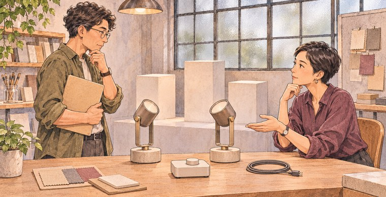

STR-16 · 香港 · 10–15分钟 · 生态系统战略 · 兼容性 · 产品差异化
接入共同标准，还能保留特色功能吗？

标准发展历程中的一个里程碑
连接标准联盟于2022年10月4日发布 Matter 1.0。三星研究院介绍了自身的参与情况，并解释了共用数据模型如何让受支持的各类设备实现基本的互操作性。这是亚洲科技企业参与更广泛生态系统的一个例子，并不能证明同一种接口能赢得所有市场。
下文的香港设备制造商、展示设备、客户访谈和参与规则均为虚构。案例中的功能限制不代表 Matter 或三星存在这种限制。
课堂决策
一家虚构的香港制造商正在为首款台式展陈灯光控制器选择接口。这是装饰性展陈设备，不是应急照明设备。两种设计都满足相同的安全性、信息安全和可靠性要求，也都有完整且资金已落实的支持与维护计划。还没有客户下单，厂商也没有作出任何兼容性承诺。
路线 A 接入一种已有的共用接口，多种配套展陈设备都在使用这种接口。用户可通过兼容的控制器调节亮度、定时开关灯。路线 B 使用厂商自带的控制器和专有接口，能实现一些设计师要求的特色功能：让多盏灯按精准的时序平滑变换，但无法连接另一生态系统的控制器。两条路线都能推出完整产品，并不是在安全和不安全的设计之间二选一。
现有上市预算刚好够走一条路线，涵盖工程开发、适用的测试、参与费用和支持服务。两条路线的上市总成本相同，都在预算范围内。售价相同，每笔完成订单的边际贡献也相同；案例没有提供需求预测。如果要做双接口、适配器或第二个版本，就要追加工程开发并另列预算。创始人必须选定目标客户和首发路线，不能指望一开始就服务所有人。
| 首款产品 | A · 共用接口 | B · 专有接口 |
|---|
| 配套设备 | 生态系统内的兼容控制器 | 仅限厂商随附的控制器 |
| 特色灯光序列 | 尚未确认共用规范是否支持 | 具备 |
| 上市资源 | 预算仅支持一条路线 | 预算仅支持一条路线 |
你的决策首款产品走共用标准路线，还是走专有接口路线？你会优先考虑客户获得的哪项好处？对于客户已经在用的设备，你必须了解什么？
第二轮 · 多了一项资料
对有意选出的20名潜在买家进行访谈后，发现他们分为两组。十二人已有该生态系统的兼容控制器。他们看重的是不用添置控制器，就能用手头的设备操控新灯；按他们的说法，基本的亮度调节和定时功能就够了。另外八人是首次购买者，没有这类设备。他们看重特色灯光序列，也表示可以接受使用随附的专有控制器。这些只是一个小型便利样本中受访者自述的偏好，不是订单、市场份额或转化率。访谈中的价格口径一致。
有书面记录的技术审查确认，虚构的共用接口规范支持基本的亮度调节和定时，但不支持该厂商的特色灯光序列。根据虚构项目现行的参与规则，路线 A 在本次上市时不能提供这一序列，但可以保留自家的外壳设计、实体控制件和品牌。路线 B 可以提供这一序列，但仍不兼容该生态系统的现有控制器。没有获批的适配器、已落实资金的双接口方案，也没有已获承诺的规范更新来消除这一取舍。
两条路线仍能以原定成本满足安全和支持要求，目前尚未作出任何承诺。创始人可以用 A 面向想扩充现有系统的买家，也可以用 B 面向追求专业灯光序列的买家。对于这两类买家所在的更广泛市场，现有证据都不足以确定其规模、支付意愿或获客成本。创始人必须先确定首发的市场定位，再明确承诺产量之前要验证什么。
你的决策你会维持还是改变原先的产品路线选择？说清楚你会先服务哪类客户、放弃哪项能力，以及预测销量之前需要哪些证据。
产品不是孤立使用的
已经装好的控制器是配套设备：它能让另一台兼容设备用起来更方便。对已经拥有这类控制器的十二名受访者来说，A 省去了另配一套控制装置的麻烦。这是客户能得到的好处，并不能证明 A 的生产成本更低或总利润更高。
兼容性与差异化是两个不同的维度
对八名首次购买者来说，B 的灯光序列是一项有特色的好处。由于他们手头没有相关设备，兼容性能立即带来的价值也就较小。A 并非毫无特色：外壳、实体控制件和品牌仍可用来做差异化。B 多一项功能，并不意味着它就更好。
参与有明确的范围
虚构的共用接口规范和项目规则决定了这次上市的产品能通过共用接口提供哪些指令。不能把一般性的互操作性表述当成承诺，认为每项特色功能都能通过任何控制器使用。反过来，也不能从这条虚构限制推断现实中的标准总是禁止专有扩展。
选的是细分市场，不是谁票数多
如果创始人优先服务想扩充现有兼容系统的买家，选 A 有道理。如果他们优先为愿意使用随附控制器的买家提供专业灯光序列，选 B 也有道理。十二人对八人的访谈结果，不能说明两个细分市场分别占60%和40%。即使边际贡献相同，也不能拿受访人数推算期望边际贡献。
先验证市场定位，再扩大规模
选 A，就要查清目标细分市场实际使用哪些控制器和指令，再验证整个使用流程能否走通。选 B，就要按给定售价测试，看看灯光序列的价值是否足以让客户接受另用一套控制装置。无论选哪条路线，都应在决定产量前取得可信的付费需求证据，并拿到有成本测算支撑的获客证据；不要指望将来的适配器能消除眼下的取舍。
教师说明
请学生画出一位买家、买家已有的控制器和拟推出的产品，再与首次购买者的情形作比较。只要目标细分市场与所作的能力取舍说得通，两条路线都可以接受。这里讨论的是生产商如何参与生态系统，不是买家退出某款软件的成本，也不是等待配套产品时该何时开业。不能根据受访人数推算销量、给信息安全性排序，或提出一条普遍适用的标准选择建议。
第二轮
对有意选出的20名潜在买家进行访谈后，发现他们分为两组。十二人已有该生态系统的兼容控制器。他们看重的是不用添置控制器，就能用手头的设备操控新灯；按他们的说法，基本的亮度调节和定时功能就够了。另外八人是首次购买者，没有这类设备。他们看重特色灯光序列，也表示可以接受使用随附的专有控制器。这些只是一个小型便利样本中受访者自述的偏好，不是订单、市场份额或转化率。访谈中的价格口径一致。
有书面记录的技术审查确认，虚构的共用接口规范支持基本的亮度调节和定时，但不支持该厂商的特色灯光序列。根据虚构项目现行的参与规则，路线 A 在本次上市时不能提供这一序列，但可以保留自家的外壳设计、实体控制件和品牌。路线 B 可以提供这一序列，但仍不兼容该生态系统的现有控制器。没有获批的适配器、已落实资金的双接口方案，也没有已获承诺的规范更新来消除这一取舍。
两条路线仍能以原定成本满足安全和支持要求，目前尚未作出任何承诺。创始人可以用 A 面向想扩充现有系统的买家，也可以用 B 面向追求专业灯光序列的买家。对于这两类买家所在的更广泛市场，现有证据都不足以确定其规模、支付意愿或获客成本。创始人必须先确定首发的市场定位，再明确承诺产量之前要验证什么。
你的决策你会维持还是改变原先的产品路线选择？说清楚你会先服务哪类客户、放弃哪项能力，以及预测销量之前需要哪些证据。